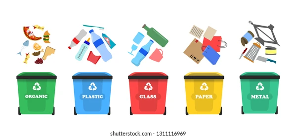

To sort trash, separate waste into different categories based on material type, like paper, plastic, glass, metal, organic waste (food scraps), and hazardous waste (batteries, electronics), placing each type in its designated recycling bin or disposal method; always check local guidelines to ensure proper sorting as specific rules can vary by region.
Key points to remember when sorting trash: Check local regulations: Always verify what can be recycled in your area as rules may differ. Rinse containers: Clean food residue from containers before recycling. Separate different types of plastic: Some plastics may not be recyclable, so check labels. Properly dispose of hazardous waste: Take batteries and electronics to designated drop-off points. Compost food scraps: If available, use a compost bin for organic waste.